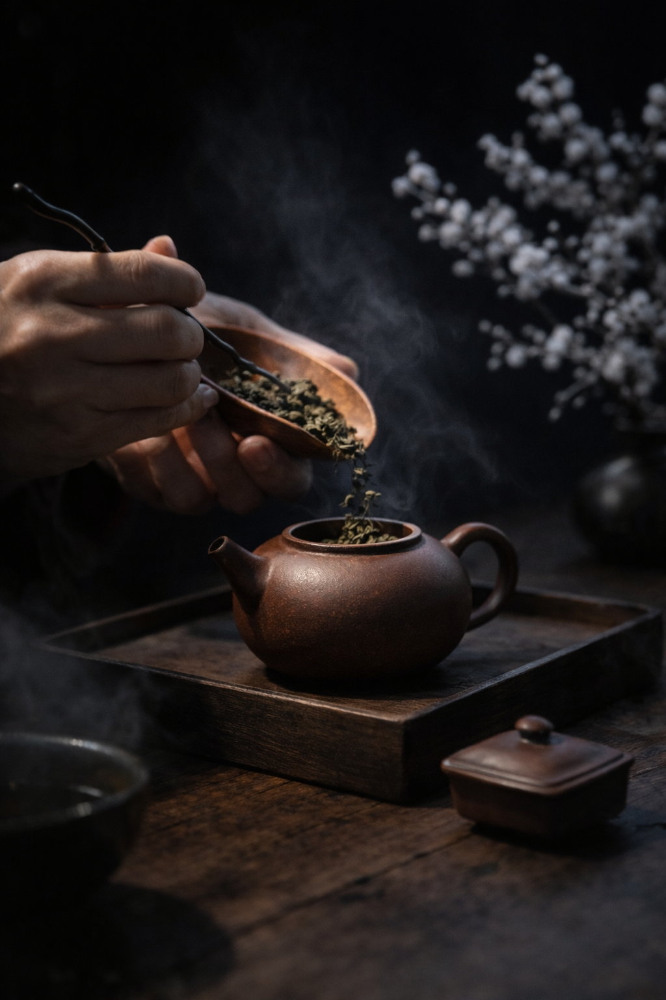
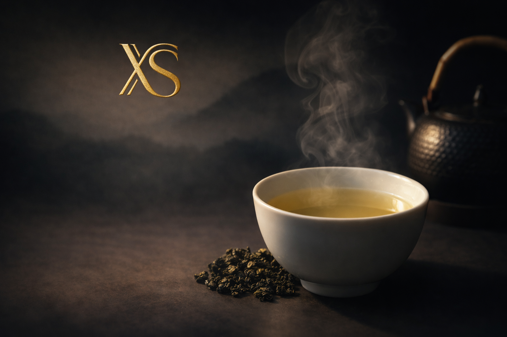
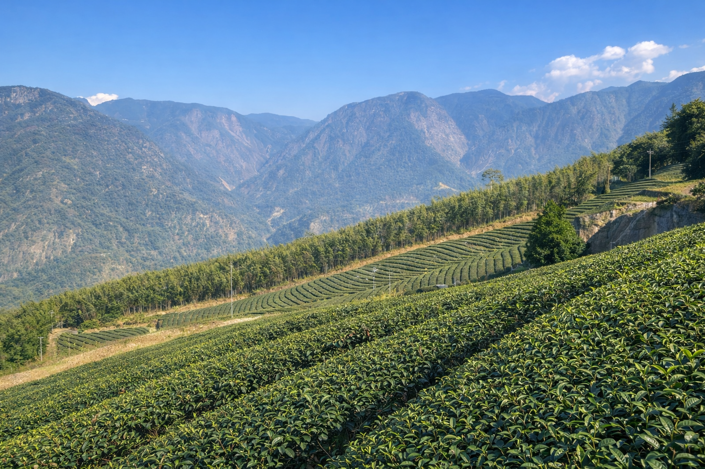
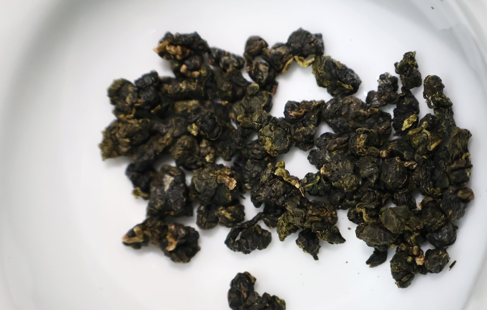
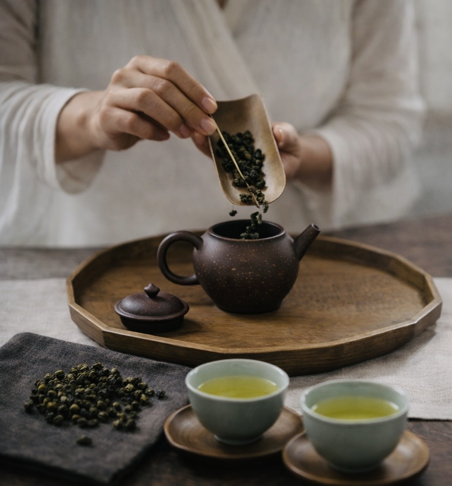
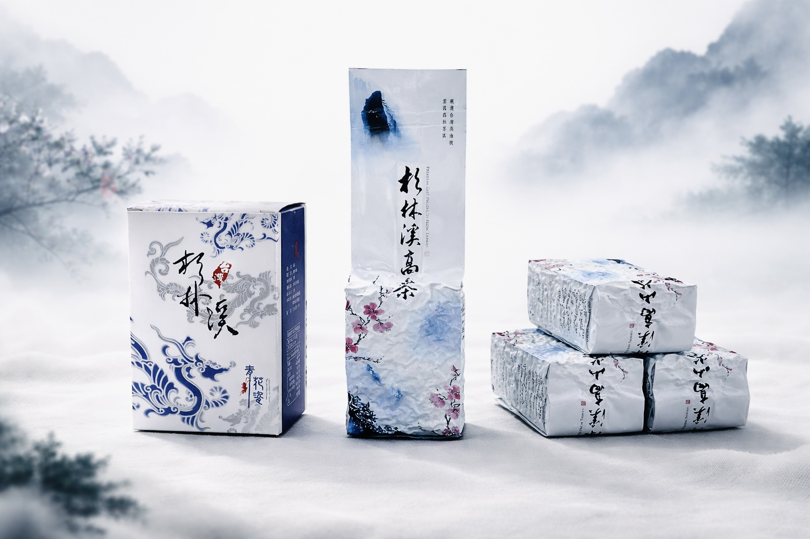

Core Selection
高山烏龍
香盛的核心品項。 以杉林溪茶區的山韻、清香與細緻度為基礎， 喝得到高山茶該有的乾淨、穩定與回甘。
適合喜歡標準高、講究茶質本身的人。

NANTOU · SHANLINXI · HIGH MOUNTAIN OOLONG
杉林溪的海拔、霧氣與溫差，決定了茶的底子。 香盛延續家族製茶工藝，專注高山烏龍的風味表現， 讓每一季的茶，都有清楚的性格與穩定的品質。
產地
香盛主打南投杉林溪茶區。 高海拔、長時間雲霧、明顯日夜溫差， 讓茶葉生長速度更慢，也讓香氣、甜感與回韻更集中。
這不是只靠包裝能說出的差異， 而是入口後的乾淨度、層次感，以及尾韻停留的時間。
所謂山頭氣，不是標籤， 而是你喝得出來的結構與細節。


工藝傳承
香盛延續家族製茶工藝。 從採摘、萎凋、揉捻到焙火，每一個步驟都直接影響最後的風味。
同樣是高山烏龍，為什麼有些茶喝起來散、薄、空， 有些茶卻能乾淨、穩定、耐喝，差別就在工藝判斷。
我們重視的不是把茶做得很花，而是把茶做得準。 香氣要乾淨，茶湯要穩，回甘要自然，這些都不能靠運氣。
商品介紹
以高山烏龍為核心，推出春茶與冬茶系列。

Core Selection
香盛的核心品項。 以杉林溪茶區的山韻、清香與細緻度為基礎， 喝得到高山茶該有的乾淨、穩定與回甘。
適合喜歡標準高、講究茶質本身的人。

Seasonal Release
春季茶葉嫩度高，香氣更揚，茶湯更清。 入口柔順，帶有淡雅花香與輕盈山氣， 整體風格清透、細緻、乾淨。
如果你喜歡高山茶的鮮活感，春茶會是很直接的選擇。

Seasonal Release
冬季生長慢，茶葉緊結，風味更集中。 茶湯厚度更明顯，口感更圓，回韻更深。 比起春茶的清透，冬茶更偏向沉穩、耐喝、層次往後走。
如果你要的是厚度與韻味，冬茶會更有記憶點。
品牌判斷
我們更在意，你喝到的東西是否夠穩。 香盛每年依照季節更新品項，保留高山烏龍作為核心， 也讓春茶與冬茶維持各自最好的狀態。
茶不是只看名字，而是看當季、看茶況、看工藝。 所以我們寧可少，也希望每一款都站得住。